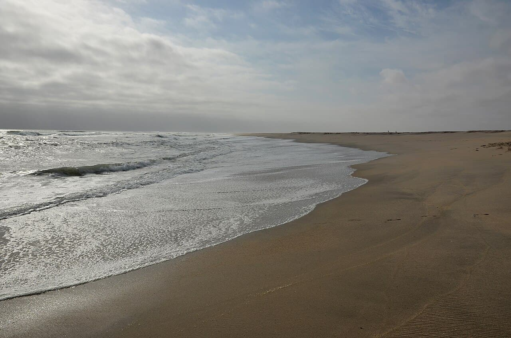

Skeleton Bay
Namibie · surf

Le plus long tube de gauche du monde : une vague de sable parfaite dans le désert de la Skeleton Coast.
- Lieu
- Namibie
- Niveau
- Expert
- Activités
- surf
- Type d'eau
- Mer / océan
- Coordonnées
- -23.00, 14.46 (position approximative du secteur)
Dangers à connaître
- Spot isolé et désertique.
- Courant très fort.
Le conseil d'Ocean Buddy
Tube interminable mais rapide et épuisant ; spot reculé, viens préparé.
Ouvrir dans Ocean Buddy Télécharger sur l'App Store
Source : Description historique Ocean Buddy · vérification externe en attente.